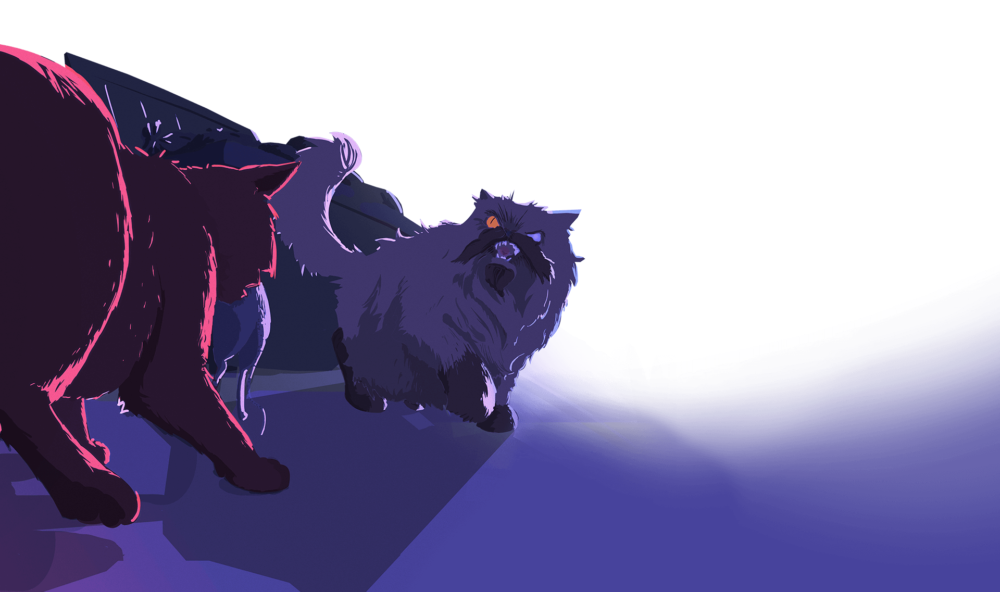
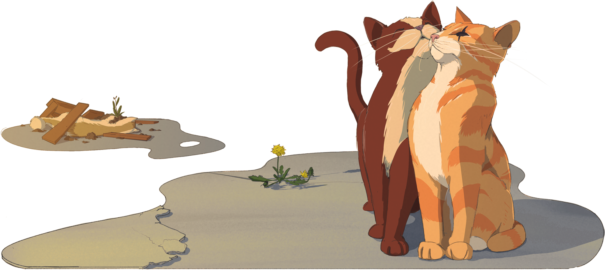
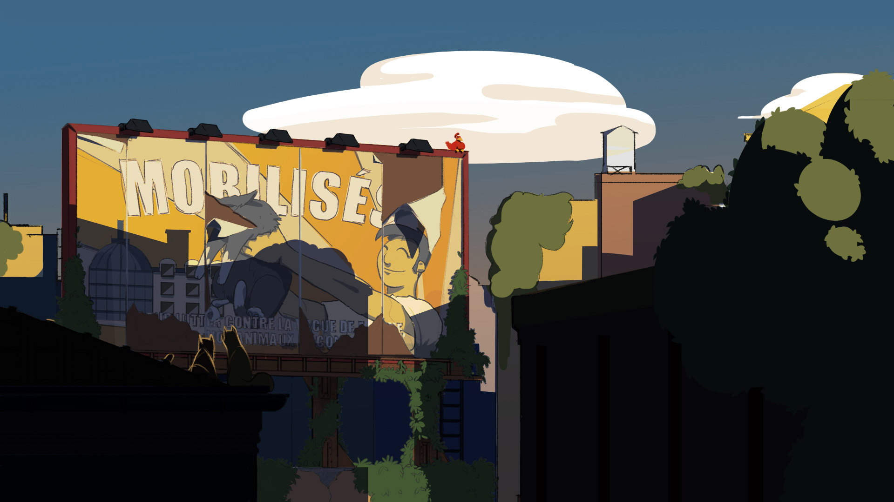
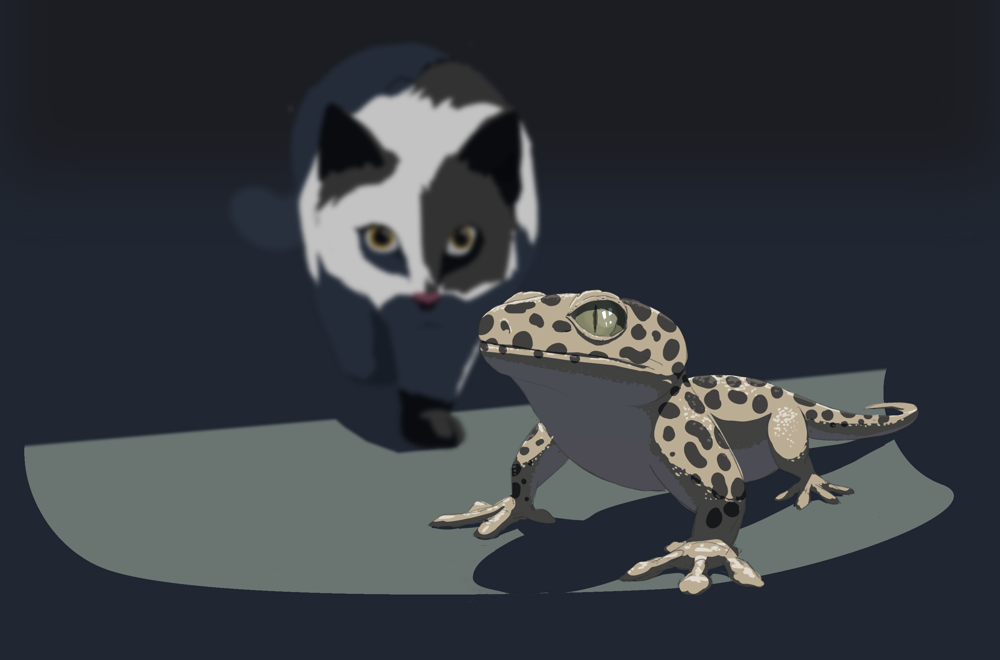

Table des matières
Et dire que je dois encore me lever, courir après mon repas, porter le coup fatal et déguster… Mais je déguste, là aussi. Le soleil est au zénith, une légère brise s'est installée, c’est le pied.
Il faut dire que les derniers jours, c'était pas ça. Un tout petit moineau à peine sorti du nid et quelques rats mal en point, ça ne rend pas un chat en forme. Courir, courir, toujours courir. Les proies ne peuvent-elles pas s’offrir à moi ? Non, la ville m'a bien appris qu'il fallait se battre pour ses besoins. Et plus que jamais, j'ai besoin de manger maintenant.
Il est temps, la faim est trop grande. Je fais glisser une dernière fois ma joue contre le béton chaud et descends de la cheminée. Mes frères et sœurs avaient toujours trouvé ça drôle, chasser. Pour eux, tuer était un jeu. Un jeu sans règles, ça ne m'a jamais amusé.
Tiens, cette gouttière n'en a plus pour longtemps, il va falloir que je trouve un nouveau spot pour me dorer la pilule, c’est le seul accès. Cette ville détruite est un ramassis de labyrinthes désorganisés où les cachettes sont infinies. Trouver un endroit où se cacher, c'est le nerf de la guerre.
Malgré les belles histoires que me racontait ma mère, la réalité reprend vite le dessus et je vis dans une guerre permanente. Chacun protège son territoire et ce serait une vraie boucherie s’il me venait l’idée de me balader trop loin.
Mon territoire ? Il a toujours été le même depuis ma naissance. À quoi bon chercher à s'étendre. J'ai même parfois laissé quelques uns prendre leurs aises, je ne suis pas du genre à pinailler pour un coin de litière. Les autres ont tendance à être le total opposé, accrochés farouchement à défendre un espace qui n'a aucun sens au final. Déterminés à honnir quiconque oserait fouler de la patte le mauvais trottoir.
Ca bouge !
Mes sens sont en éveil, je suis surpris à chaque fois. D'où est-ce que ça peut venir ? Là aussi je laisse couler, temps que cela m'aide à courir le moins possible. Mon instinct se confirme, je m'élance sans hésitation. Un vieux rat visiblement. J’espère juste pas trop vieux, sinon ils ont un goût de poussière. Il renverse tout sur son passage pour entamer sa fuite perdue d'avance. Mes pattes sont rouillées et rongées par la flemme, mais je les rappelle à l'ordre.
Au bout de quelques mètres dans la ruelle, il tente une embardée pour accéder à un sous-sol. Sans succès, je gagne un peu de terrain. Il est vif, sûrement plein de bonnes vitamines. J'occupe l’espace sur sa droite pour le diriger un peu. Il ne se laisse pas impressionner, il bifurque quand même. Les rues défilent et je le tiens serré pour ne pas qu'il se faufile. Paniqué il en oublie les recoins.
Bien.
Il tente un tuyau qui traîne. Trop petit pour moi, je tourne en rond
autour de lui et ronronne d’impatience. Quelques miaulements et
griffures pour servir l'ambiance, en plein dans le mille. Il ne résiste
pas à la pression et sort de sa cachette pour courir de plus belle.
Mince ! Pensant avoir gagné, je ne l'ai pas joué stratège. Il se dirige vers l'arbre de non retour. Passé ce point, je ne suis plus chez moi. La perspective même de devoir recommencer ma chasse me ramollit. Tant pis, je suis si proche, personne ne me verra. Je dois juste faire vite. Très vite.
S'il tourne dans cette ruelle, il sera acculé. Le mur est haut et les sorties inexistantes.
Il tourne !
Plus qu'une foulée.
Avec ma fierté féline qui crève le plafond, je plante enfin mes crocs
dans le cou de la bestiole. J'ai bien fait, il a bon goût. Enfin.
Allez, je dois filer maintenant. Bien que mon repas soit lourd, je devrais pouvoir rejoindre mon fief.
“Le dîner est servi.”
Une voix rocailleuse s'élève derrière moi. En un instant, je me retrouve dans la peau du rat que je tiens dans la gueule.
Le mur est haut et les sorties sont inexistantes…
D’habitude à cette heure, tout est très calme. Mais ce soir c’est différent, j’entends du bruit venant de la rue de derrière. Je vais aller voir, de toute manière j’ai pas grand chose de mieux à faire.
Je reconnais la voix de Gros Bouchon. Ce gros con de Gros Bouchon. J’ai jamais pu le sentir ce chat là… Il y a des nuits de cela, il a chassé ses propres frères et sœurs du territoire afin d’en avoir l’exclusivité. J’entends un deuxième chat. Je ne le reconnais pas… Ils ont plus l’air d’avoir envie d’en découdre que de trouver un terrain d’entente. Revoilà ce foutu oiseau. Les poubelles valsent, je ferais mieux d’aller voir ce qui se passe. Ce foutu piaf attendra.
C’est bien ce que je pensais… C’est la bagarre là-bas. Gros Bouchon n’a pas volé son nom. Qu’est ce qu’il est gros ! Ces deux-là ne jouent définitivement pas dans la même catégorie. De toute évidence, ce ne sera pas un beau combat. Je devrais peut-être empêcher Gros Bouchon de toucher ce pauvre petit gars.
Le p’tit a un regard qu’il ne m’avait jamais été donné de voir. Pas le regard de celui qui a peur, non ! Plutôt le regard de celui qui accepte la fatalité. Le regard de celui qui est tétanisé et qui ne laisse apercevoir aucune autre fin que LA fin. J’avais pas laissé un assommeur dans le coin ? Gros Bouchon n’a pas l’air d’en être bien loin.
Je devrais pas avoir trop de mal à viser Gros Bouchon : il est si massif… J’ai jamais trop compris pourquoi on trouvait des plantes dans des boites. Mais là, faute de compréhension, ça avait au moins le mérite de m’être utile. Je sais quel bruit fait le bois, mais j’ai aucune idée de quel bruit fait le bois sur un énorme chat. Allez, salut l’ami !
J’arrive pas à savoir si p’tit père passe maintenant le plus beau jour de sa vie ou s’il espérait quand même pouvoir en placer une ou deux.
Bon… je ferais bien de trouver un moyen de descendre d’ici moi… Je me demande si le piaf est encore dans le coin.
Le silence. Après ce chaos incroyable, tant dans ma tête qu'autour de moi, plus un bruit. En un instant, le monstre est étalé sur le sol. La poussière remplit la rue, mon esprit, lui, se vide. Pétrifié d'abord par ce monstre puis par ma chance, le rat a pu s’enfuir. Peu importe ! Comme lui, je l'ai échappé belle. Dire que je me le disais pendant ma poursuite : “tu vas trop loin”. Je vais toujours trop loin de toute façon. Je m'en fous, il faut que je bouge.
Le rat s’est déjà barré, et moi je peine à m’activer. Comme d’hab, dés que l’émotion me gagne je suis tétanisé. Cette fois-ci je ne raisonne pas mes pattes. Pas moyen, elles sont tétanisées. Il a du courage ce rat, lui au moins à défaut de courir, il essaye. Et moi ? Je reste bêtement là, comme si mon histoire s'était terminée quelques secondes plus tôt, face à la bête.
J’entends bouger.
Mes pattes me trahissent, mais pas mes sens. Toujours surpris. Le bruit a dû attirer du monde, je dois m’activer. Mon ouïe laisse place à ma vision, une silhouette descend du toit.

La nuit tombe, je me demande ce qui m’a pris le plus de temps finalement. Est-ce que c’est cette gouttière ou ce match perdu d’avance et gagné par surprise ? Bon, quoi qu’il en soit c’est l’heure où les petits poilus sortent. C’est un bon timing.
P’tit père n’a pas l’air de s’être tiré. Qu’est-ce qu’il fait encore là lui ?
— Allez ! Tire toi !
— Je respire un peu et je m’en vais.
— Qu’est-ce qui t’a pris de t’aventurer ici ?
— La chasse, tout simplement. Je pensais faire vite et disparaître. Maintenant j’ai tout perdu, je ne sais pas ce que je vais manger.
Devant moi, je vois son vieux rat agonisant qui essaie de s’enfuir. Il devait vraiment avoir faim p’tit père…
— C’est ça que tu cherches ? lui demandais-je en rattrapant son amuse-gueule
— Merci.
Il ne peut s’empêcher de commencer à manger.
— C’est toi qui as fait tomber ces caisses sur ce dingue ? C’était impressionnant, j’ai bien cru que j’allais y passer. Je n’en peux plus de ce danger permanent, mon enfance me manque.
Je sais pas trop ce qu’il me raconte mais là, la nuit tombe, j’ai faim et… C’est quoi ce bruit ? Encore ce Piaf, un jour je t’aurai…
— Est-ce que je peux rester ? il reprend.
L’oiseau s’envole…
— Sans toi, j’aurais servi de repas. Laisse moi te remercier, je t’aiderai pour ton territoire, pour la chasse. Tu mangeras toujours en premier.
Impossible pour p’tit père de cacher son ronron à ce moment précis.
— Et puis je suis loin de chez moi maintenant, la seule idée de rentrer seul à cette heure du jour après ce qui s’est passé me donne le tournis.
L’idée même de me le coltiner me rebute, mais lui refiler les corvées me séduit assez.
— Si tu veux rester avec moi, c’est seulement parce que TU le veux, souviens t’en !
— Compris !
C’est de loin le chat le plus inoffensif que je rencontre. Il devrait pas prendre trop de place.
— Reste mais fais-toi petit !
Les ronrons de p’tit père me montent déjà à la tête.
Je ne sais même pas pourquoi je lui ai demandé ça. J'ai passé ma vie à éviter soigneusement les autres et à me faire discret. Et voilà qu'au premier Shérif venu, je lui offre mes services. Ce doit être la fatigue. La fatigue d'affronter chaque jour un monde qui n'accepte personne et qui rejette tout le monde. C’est sûrement ça.
Je suis encore plus abasourdi qu'il accepte. Je dois paraître bien faible à ses yeux. Pauvre chat incapable de se défendre tout seul. Ha ! Elle est loin la fierté de ma course poursuite effrénée !
Mais un sentiment de soulagement m'envahit. Je ne suis plus seul maintenant.
Ça fait des semaines que Poire et moi on traîne ensemble. Il apprend vite, mais qu’est ce qu’il parle… Je crois qu’il commence à assimiler la technique de l’assommoir par le toit.
— Poire, tu peux venir ?
Poire descend de la cheminée et se dirige vers moi.
— Tu as vu ce panneau à l’angle du toit bleu et du toit jaune ?
— Non.
— C’est un grand rectangle. On y voit deux bipèdes et un chat vivre ensemble. Il a l’air tellement heureux.
— Plus qu’avec la cataire ?
— Oui.
— Plus qu’avec le thym ?
— Oui.
— Plus qu’avec le carton ?
— Ta gueule Poire…
— Ma mère me racontait des histoires sur ces bipèdes. Mais je n’y crois plus vraiment.
— J’suis sûr qu’ils sont encore parmi nous Poire…
Ça fait des jours que j’ai pas vu ce foutu oiseau. Cela fait même des semaines que les “récoltes” sont de plus en plus faiblardes. Est-ce inconscient de quitter le territoire ? J'en sais rien… Une chose est sûre, il reste à peine de quoi manger sur le territoire pour un chat seul… Alors deux chats… En fait, c’est soit je mange Poire, soit on se tire d’ici.
— Poire ?
— Oui ?
— Demain matin, nous partons d’ici.
— Pourquoi ?
— Tu as mangé ce soir ?
— Non.
— Et hier ?
— Non.
— On commence à être à court, on doit trouver de la nourriture ailleurs Poire.
— Mais tu veux aller où ?
— Tu sais quand je te parlais des deux bipèdes et du chat à l’angle de la rue ? Je suis quasiment sûr d’avoir déjà vu l’endroit où ils sont.
— Et tu penses que les choses seront meilleures qu’ici ?
Il commence à peine à prendre confiance en lui, je n’ai pas envie de le trahir.
— Oui.
Je n’en sais rien, je mens, et à Poire, et à moi-même.
Quatre jours sans se dorer les moustaches à l’aise au soleil ça peut paraître long. Mais ça fait aussi quatre jours que je m’affûte, que je comprends mieux mon instinct. Et puis… chasser à la volée sans avoir à se soucier des limites imposées par son territoire, c’est pas mal. John est impressionnant. Quelle que soit la situation, il a le bon réflexe, la bonne réaction. Toujours à l’affût, toujours prêt mais jamais drôle. J’ai pourtant essayé plusieurs fois de le dérouiller, mais rien n’y fait. Je l’aurai à l’usure. Il croit que je ne l’entends pas, mais il est en boucle sur un foutu oiseau. Je me dis qu’il a la mécanique qui se détraque. J’ai jamais vu d’oiseau ! Je me demande si la rouille n’est pas allée un peu trop loin. Mais c’était lui ou personne. Je me suis laissé porter et pour le moment, pas de regret.
Il me surprend le petit père. Il est doué, malin et rapide. Mais encore un peu lourdingue dans ses déplacements. C’était comme s’il s’était résigné à ce que les choses s’imposent sans avoir d’autre choix que de les accepter. Accepter… oui pourquoi pas, quand on est seul et qu’on ne dépend que de nous ! Le monde continue de tourner, tout le monde ici se bat pour survivre. Quand la recette ne fonctionne pas, on change les ingrédients. Il n’y avait plus rien à manger sur notre territoire. Tôt ou tard on se serait retrouvés à court, ou on aurait fini par se faire évincer. Ici, comme tout le monde est à croc, ça aurait mal fini. Mais c’était lui ou personne. Je me suis laissé porter et pour le moment aucun regret !
Tandis que nous avançons sur ce large parterre d’asphalte, les maisons
ont cédé leurs places à un horizon incroyablement vide. Sur le chemin
nous apercevons des rangées entières de colosses d’aciers, ces mêmes
colosses qu’on trouvait de part et d’autres de la chaussée à la
jonction des territoires. Je ne sais pas si je l’ai rêvé ou si c’est
réellement arrivé, mais j’ai l’impression d’en avoir déjà vu bouger. Et
avec quel vacarme ! Je ne sais pas de quoi ces bêtes se nourrissent
mais ça doit être difficile de faire le plein quand on est aussi
bruyant. Sorti de nulle part, l’oiseau est juste là, devant moi,
trônant fièrement sur un géant d’acier bien plus imposant que les
autres.
— Ne bouge plus !
— Alors tu disais vrai ! Il est magnifique ! me sort-il d’un air bipède.
— J’irai pas jusque-là. Il a l’air appétissant mais j’en ai déjà vu des plus beaux.
— Et pourquoi vouloir l’attraper ?
— Ça fait au moins six ans que je suis dans le coin, six ans qu’il est là, toujours collé à mes basques. Six ans, que peu importe où je me rends, il est là, à me regarder et à me narguer. J’ai besoin de personne et certainement pas d’un oiseau à mes côtés. Je suis né seul, je me suis fait seul et je finirai seul.
— T’as décidé de finir seul, mais en attendant je suis là !
— Merci de me le rappeler…Et tu comptes m’aider à l’attraper pour autant ?
Cinglant. Mais pas de place à la discute, John se lance. Il a attendu que le piaf tourne la tête, c’est pour ça qu’il ne me laisse pas le temps de répondre. Allez ! je le suis et cette fois je le tiens. John ondule avec ses sauts à travers les obstacles, c’est fluide. On sent qu’il gagne du terrain, la patte est sûre à mille pour cent. Et ça, sans lâcher l’oiseau du regard. Lui, il vole. Mais il fatigue. Pas un gros voyageur visiblement. Alors que John repasse au sol pour la jouer discrètement, l’oiseau se pose. C’est bien vu, le gros colosse lui cache la vue. John est devenu invisible.
Je bondis sur le museau du petit colosse afin de gagner de la hauteur et de pouvoir accéder au museau du plus gros, celui sur lequel l’oiseau trône. Alors que je prends l’ultime appui, je sors mes griffes et envisage déjà les endroits où celles-ci lui feront un beau collier. Cette fois-ci, c’est la bonne. Je suis en l’air, tout se passe comme prévu, mais j’entends un bruit parasite qui capte mon attention. Je tourne la tête pour regarder et je réalise immédiatement la connerie que je viens de faire. Je m’écrase contre la vitre du géant de métal dans un vacarme assourdissant.
Non ! Impossible de me retenir, je ris aux éclats. Je sais qu’il sera vexé, mais quelle action ! C’est rare. Rare qu’il se plante de la sorte. En même temps, il est pas net cet oiseau. Il a quelque chose. Dans son air, sa posture, je ne sais pas. On a l’impression qu’il savait que John glisserait. Sans rien dire, en boitillant à peine, John suit l’oiseau en direction de ce gros bâtiment bleu.Bleu. J’aime bien le bleu.
Tout est allé trop vite, je fatigue, j’ai chaud, mais j’ai encore une chance. Pas le temps d’attendre Poire ! Qu’il se bouge !
Le paradis, miiiiiiahahahou, j’adore mon territoire. Il est vaste, complexe. Idéal pour la chasse. Seul un petit trou permet d’entrer ou de sortir vers le monde dangereux.C’est par ce trou que je suis entrée avec ma mère et que je l’ai vu partir pour la dernière fois. C’est aussi par ici que ma nourriture vient à moi. Malheureusement, c’est aussi par là qu’ils entrent : les autres…
Jusqu’à présent, je ne suis tombée que sur des chats amincis par la faim, des faibles du dehors, des ombres pathétiques. Les plus malins ont fui en sentant que le ter-ritoire était occupé. D’autre, j’imagine, regrettent le jour où se retrouvant face à mes yeux brillants et mes griffes affûtées, n’ont pu que prendre leurs pattes à leur cou tout en récoltant au passage de nouvelles cicatrices. Mais il arrive que, de temps en temps, certains mâles ridiculement fiers, malgré leur évidente infériorité, tentent de me prendre MON merveilleux territoire. J’ai dû tristement mettre un terme à leur misérable vie. J’ai eu de la chance jusqu’à présent, aucun ne s’est révélé être un véritable danger. Car si un jour il entre ici un monstre que je ne peux maîtriser, alors je devrai fuir et ressortir par le petit trou.
Je n’aime guère tuer mes congénères, mais j’adore chasser, ça oui. Miiihahahouu ! Je suis faite pour ça, j’ai les plus belles griffes du monde. Affûtées, brillantes et incroyablement efficaces pour tuer. C’est de l’entretien c’est sûr, des heures à détruire les nombreuses “boites moelleuses”, les beaux dessins de murs en papier. Mais rien ne me satisfait plus que de mettre en lambeaux les tissus suspendus ! Miiiihahahaou !! Je suis la Reine de ces lieux. Je connais les moindres recoins de ce labyrinthe insensé et si je le souhaite, je peux avancer ici sans jamais mettre une patte au sol. Seul un oiseau pourrait m’échapper. Et du perchoir le plus haut de mon temple, je vois tout. D’ailleurs, c’est parti.
Voilà maintenant quelques minutes que j’ai repéré l’intrus : une salamandre inconsciente venue se reposer à l’ombre de ma demeure. Elle ne sait pas encore qu’elle vient de devenir ma proie. Je me décide à l’approcher doucement, elle est au sol et je la domine de plusieurs étagères. J’avance à pattes de velours en évitant de faire tomber quelque chose susceptible de me faire repérer.
Aplatie au maximum, dans l’ombre d’une fausse plante, elle ne m’a pas vu la dépasser et me placer en embuscade. Désormais, la proie s’approche de moi, s’en est fini d’elle. Je bondis sur elle alors que dans un ultime mouve-ment de désespoir elle tente une embardée. Mais toutes griffes dehors, mon coup précis et puissant la ramène tout droit en direction du sol. Gagné ! Miiiiahahaou ! Me voici triomphante, dominant l’animal qui cesse petit à petit de s’agiter, son sang coulant le long de mes griffes. Je ne lui ai laissé aucune chance. Triste destin pour cette proie qui cherchait juste un endroit de repos. La voici sur le sol, se reposant pour l’éternité.
Je n’ai même pas très faim, les salamandres ont généralement un goût atroce. Je croque un morceau, après l’avoir fait passer de gauche à droite entre mes pattes, lui don-nant l’air d’un pantin désarticulé. Cette victoire a le goût de ce lézard, amère. J’entends les oiseaux dehors, au travers du petit trou. Je me souviens de moins en moins de l’extérieur, je suis arrivée ici je n’étais qu’un chaton. Mais très vite, j’ai adoré l’endroit. Ma mère m’a tout appris : la chasse, l’affûtage des griffes, le marquage de territoire, tout ! Et puis un jour elle est partie. Perché à l’entrée du Temple, un oiseau flamboyant l’attendait. Elle m’a dit de ne pas bouger, s’est avancée, il s’est envolé, elle l’a suivi.
C’est sombre à l’intérieur. Un petit trou, unique moyen pour entrer
dans le bâtiment bleu, laisse passer un trait de soleil à travers la
façade. Mais après être rentré, ma vue s’adapte vite et je vois de
l’espace, beaucoup d’espace. On est haut aussi, je distingue mal le
sol. John est devant moi, on avance discrètement. Un enchaînement de
métal plus tard, il se met en idée de traverser ce câble.
— T’es sûr ? Je le sens pas.
— Allez ma biche, n’ai pas peur. Il a le don pour me les froisser, je
le sens pas j’ai dit ! Trop tard il est déjà de l’autre côté et continue d’avancer.
Un bruit de glissement me fait dire que j’ai peut-être surestimé la courbe de progression de Poire. Je me retourne, je ne le vois plus derrière moi. À tout les coups ce nigot a loupé son saut ! Bon… je vais essayer de retourner sur mes pas, la grille est suffisemment haute pour qu’il lui soit arrivé quelque chose…
J’avais bien dit que je le sentais pas ! Je chute. Et maintenant le plus important : l’atterrissage.
Trois, deux un.
Du mou ! Je me suis étalé du ciel, sur du mou ! J’en avais croisé quelques-uns, mais jamais d’aussi agréables. Une texture épaisse, incroyable, je ronronne immédiatement.
Mais qu’est ce que j’ai mérité pour me traîner un boulet pareil. Règle n°1 : “fais toi discret !” Et voila que je l’entends ronronner ! La bonne nouvelle, c’est qu’il n’a rien. La mauvaise ? C’est que s’il y a qui que ce soit ici, il saura qu’on est là, bien avant même qu’on s’en apperçoive.
Évidemment que je l’ai vu descendre ce gros lourdingue, eh mais attend ? C’est sur ma sainte boîte qu’il se prélasse ? Mais pour qui il se prend ? Et il sort d’où cet abruti ? Cette boîte c’est la seule que je n’ai pas détruite, je la garde pour mes vieux jours, c’est la plus belle, la plus confortable et la seule sans odeur. Mmmh… ça explique pourquoi il ne m’a pas encore repérée, enfin, l’endroit entier doit empester ma présence. Peut-être que son odorat est défaillant, ou que l’intrus est trop occupé à détruire Ma propriété ! Il ne paie rien pour attendre, j’aimerais le réduire en bouillie, mais ce n’est pas ma méthode. Prudence, on observe et on avise. Il est volumineux et je ne voudrais pas me retrouver en difficulté. J’ai l’intuition que quelque chose m’échappe… Je reste à distance suffisante pour ne pas être prise de court mais visible. À sa réaction je saurais s’il est dangereux ou juste débile. Regarde-moi, allez… re-gar-de moi.
Je vois Poire… Il est là insouciant pour pas dire inconscient ! J’en viens à me demander s’il me dit qu’il comprend, juste pour que je lui fiche la paix. J’entends un bruit qui vient d’en face. Poire n’a même pas l’air d’avoir remarqué. Est-ce qu’il retiendra plus s’il se retrouve devant les problèmes qu’il a lui-même provoqué ? J’suis sûr que non. Je reste en position, voyons comment les choses se trament, je vais pas passer chacune de mes journées à lui sauver le popotin !
Qu’est-ce que c’est bon ! Toute cette matière, tout ce mou ! Je suis sur un nuage, j’oublie presque que j’ai fais le grand saut. Où est John d’ailleurs ? Il faut absolument qu’il voit ça. Je miaule un coup pour l’appeler. Et j’entends immédiatement gronder derrière moi. “John ! Tu dois ab-solument te couché la dess…”
— Salut, je te dérange pas ? Cet idiot lève en fin la tête. Tu as deux minutes pour déguerpir. Affolé, le voilà qui cherche de l’aide du regard.
Encore ! Décidément tout le monde m’en veut de ma présence.
— Tu as gagné !
— Hein ?
Mais qu’est ce que c’est que ce chat ? Quelque chose ne va pas,
j’ai les vibrisses qui s’agitent. D’habitude tout est clair, qui
vient sur mon territoire, termine en charpie. Il est marrant celui-là,
j’ai rien gagné du tout ! J’ai même pas eu à lui courir après. Je
suis à deux griffes de m’en faire un tapis.
— Je ne veux pas me battre.
— Qu’est ce que tu fais là ?
— Je suis tombé du plafond, je me suis retrouvé ici en un instant.
Je ne peux pas tout lui dire, si elle apprend que John est ici elle pourrait
m’achever avant qu’il arrive.
— Quoi qu’il en soit, ce canapé est très mou. C’est sympa ici !
— Partez de chez moi, toi et celui que je peux sentir d’ici.
Comment peut-elle savoir ? Moi même je n’ai pas vu John depuis ma chute.
— De qui parles-tu ? Je suis arrivé seul ici.
Son stress est puant. On le ressent à 2 kilomètres. Il ne tient pas en place et
regarde partout. ll n’est pas seul j’en suis sûre mais il ne sait pas
où est son acolyte.
— Montre toi, je sais que tu es là. Sinon je mange ton copain.
Une ombre se profile derrière le paravent, j’avais correctement anticipé d’où il viendrait.
J’aurais sûrement fait pareil.
— Du calme, on ne te veut aucun mal.
Un chat roux beaucoup plus assuré s’avance vers moi, ses nombreuses cicatrices me
font douter de sa sympathie. Je me tourne vers l’autre, le fusille du regard,
son ronronnement s’arrête instantanément.
— J’avais trop peur, j’ai menti… On ne cherche qu’un peu à manger.
— On a quitté notre territoire. Nous sommes des chats qui voyageons.
On s’est arrêtés ici pensant qu’il n’y avait personne.
— Eh bien il y’a quelqu’un et la nourriture ici lui appartient. Toi ! Descend de
ma boite moelleuse ! Et toi reste où tu es !
J’ai un vrai problème, je ne pourrai pas les faire sortir de force. À deux contre un
et sans effet de surprise, c’est la défaite assurée. Il va falloir la jouer fine.
— Recommençons, moi c’est Poire, je suis gros, vachement gentil. Et j’aime le mou !
Et le bleu ! On traîne ensemble avec John depuis quelques temps,
je sais qu’il peut faire peur mais il m’a sauvé plusieurs fois les moustaches !
Il a la couleur de son tempérament, un vrai caramel. Dur d’abord puis mou dedans.
Il va falloir que je garde l’œil ouvert. Au moindre faux pas, je descends
le caramel en premier.
— Tu n’es pas une adversaire, nous ne prendrions pas le temps de discuter…
— Une nuit pas plus, et pas de chasse sans mon autorisation sur mon territoire.
Je prendrai la plus grosse part, et vous dormirez là où je vous le dirai.
Poire la suit sans hésiter, mais je préfère garder mes distances. Je vois bien qu’elle ne nous fait pas confiance. Est-ce-qu’elle prévoit de nous tuer dans notre sommeil ? Quoi qu’il en soit restons prudents.

— Depuis quand es-tu ici ?
— Depuis presque toujours.
Poire multiplie les questions et j’en profite pour prendre un peu
plus de distance pour repérer les lieux.Des meubles, des meubles partout…
Ils sont comme dans les habitations, mais là, ils sont sans vie et
s’étendent à perte de vue. Pourquoi en fabriquer autant ? Il n’y a
pas assez de chats pour tous les griffer.Leur voix s’éloignent, je
ne dois pas laisser Poire seul trop longtemps.
— … et c’est comme ça que je me suis retrouvée seule ici.
— Tu sais tu pourrais nous accompagner. D’après John, cet endroit est parfait pour les chats.
— Je ne vous accompagnerai pas, je suis très bien ici. Cet endroit, dont tu m’as parlé,
tu n’es pas le premier à l’évoquer. Ceux qui ont eu l’audace de passer par ici
suivaient cette route. Ils appelaient ça « LEUZO ».
— Et tu sais comment y aller ?
— Non. Je ne m’aventure pas en dehors de mon Temple, c’est dangereux.
Je n’en ai jamais vu revenir de la bas. Peut-être qu’ils y sont bien.
— C’est sûrement pour ça !
Il est si naïf… mais je l’aime bien. Il n’est clairement pas une menace, et a l’air d’avoir le cœur sur la patte. John, en revanche, il a pas l’air net, il est chez moi et il agit comme si il pouvait faire ce qu’il veut. D’ailleurs, où est-il ?Un bruit. ZBREYMPuis un autre. KRRRKRRKRKRKRUn fracas assourdissant s’élève du fond de mon royaume. Je vois au loin un panneau tomber, et un nuage de poussière se lever du sol. C’est John, en pleine frénésie, qui renverse tout sur son passage. Et plus haut, je n’en crois pas mes yeux…
Je savais qu’il était toujours à l’intérieur. Il n’a qu’une seule sortie. Cet oiseau est à moi.
Alors là, certainement pas ! Cet oiseau est sacré ! Je me lance à sa poursuite, espérant que l’agilité de l’oiseau me laisse un peu de temps pour rattraper John avant qu’il ne l’éventre. Je saute de boites en étagères, et reprends rapidement du terrain.
Ils jouent ? Finalement ils s’entendent bien. Je vais les suivre, il m’expliqueront les règles en route. Décidément les relations entre chats me dépassent.
— Laisse cet oiseau tranquille !
À peine je réalise que Frihet me poursuit, que ses griffes viennent
se planter dans ma croupe. Nous roulons en ren-versant absolument
tout sur notre passage. Je me débat pour qu’elle me lâche, mais son
étreinte est beaucoup trop forte, elle me fait miauler de douleur.
— Ça n’a rien à voir avec toi ! je lui dis en la repoussant de mes pattes arrières.
— Bien sûr que si ! Tu es trop borné pour comprendre !
Elle prend son élan et me percute la tête en avant. Je suis projeté
en arrière sous la puissance du choc. Mon dos heurte la paroi et
dans le même mouvement, avec une rage totale, Frihet me plaque contre le mur.
— Cet oiseau est sacré pour ma mère, jamais je ne te laisserai lui faire du mal !
— Je ne te laisserai pas te mettre sur mon chemin, même si tu penses devoir protéger cet oiseau.
— Je vais te tuer !
Sa rage vient heurter violemment mon museau.
J’arrive à peine et j’entends Frihet hurler sur John complètement maîtrisé. Son rugissement semble sorti d’une autre espèce, plus puissante et plus grande que les chats. Sa colère est saisissante, mais plus impressionnant encore, le sol se met soudainement à trembler sous mes coussinets. D’abord légères, les secousses s’intensifient à chaque seconde. Mon instinct me somme de déguerpir, la pression est insupportable. Je dois absolument sauver John de cette furie.
Je n’ai jamais été aussi enragée, j’étais prête à le couper en deux. Mais sans savoir pourquoi, mon instinct remplace instantanément toute rage par de la peur. Le sol vibre sous mes pattes, les murs commencent à grincer.
Frihet relâche doucement son emprise et détourne le regard vers le
vide. C’est elle qui fait trembler le sol ? Je n’ai jamais vu un chat
faire ça. Non, ce doit être autre chose. Je vois Poire redescendre à
toute vitesse vers nous. Il fonce sur Frihet. Mais avant de
l’atteindre, dans un bruit assourdissant, un immense morceau de métal
s’effondre sur le sol. Manquant ainsi d’aplatir Poire. L’élan coupé, je
le distingue au travers de la fumée, tétanisé.
— Frihet ! L’endroit tombe en morceaux ! Lâche moi !
— Mais que ce passe-t-il ?! C’est un morceaux du plafond ?
Le sol n’en finit pas de trembler et ça monte en puissance. Une
fois remis de mon absence, je contourne l’obstacle pour rejoindre John.
— Qu’avez vous fait ? Hurle Frihet à John, effarée.
Je me glisse entre les deux pour ramener Frihet à la raison.
— Lâche-le Frihet ! Il faut partir !
Mon monde s’effondre. Et je ne bouge pas. Ma maison tombe en ruine et je ne peux rien y faire. Je distingue le plafond se plier et je sens chaque mur se disloquer. Rien ne résiste à cette vibration venue du sol, mes muscles sont paralysés alors que tout est en mouvement.
Je la pousse avec ma tête pour qu’elle se mette en mouvement mais rien n’y fait, elle est clouée au sol. Alors que le mur au dessus de nous penche dangereusement. Elle bouge enfin. Je retrouve John du regard, il est déjà près de la sortie.
Tout est si flou. Je ne me souviens que de formes abstraites s’étalant le long de mon champ de vision. Mes muscles sont tendus, comme si je venais de faire un effort incroyable, mais aucun souvenir. Rien, juste un monde en deux couleurs, bleu et blanc, un ensemble brouillon de métal et la silhouette de deux chats se découpant dans l’horizon.
Il fallait que cette catastrophe arrive en pleine nuit. Nous voilà déjà dehors alors que le froid revient. Est ce que c’est ma faute si on en est là maintenant ? J’espère que non, ça aurait pu mal finir. Ce ne doit pas être simple pour Frihet. Se faire sortir de la boite, c’est jamais agréable.
— Je vois que tu es réveillée.
Je tournais autour d’elle depuis un petit moment et même si je ne tournais plus,
je gardais un œil sur elle.
— Nous nous en sommes sortis, c’était moins une. Je suis terriblement
désolé pour ton Temple bleu.
Je ne peux pas compter sur John pour ce genre d’attention, il est mal
à l’aise. Alors comme c’est important, je m’en occupe. Et maintenant, Frihet
elle fait partie de la bande,je crois.
— C’est donc bien mon temple que je vois écroulé devant mes yeux.
— Oui… Mais nous nous sommes rencontrés, tu n’as qu’à nous suivre !
— Et bah voyons ! Vous avez fait tomber ma maison pour me forcer à
vous accompagner !
— Non Frihet, nous n’avons pas ce pouvoir…
John sort d’un buisson proche et s’avance vers nous l’air concerné.
— Nous devrions partir, le coin est en effervescence après les secousses. Frihet, tu es avec nous ?
Quel choix ai-je ? Cette bande de chats fous m’ont eue.
— Je n’ai pas d’autre choix. Sache que…
Le sol tremble de nouveau. Cette fois c’est instantané, le choc est lourd.
Poire vacille sur ses pattes et tombe maladroitement. Un son incroyable
sors du sol et envahit l’espace.
Comme étouffée, la voix de John ressort au loin :
— Partons tout de suite !
Poire m’incite à les suivre alors que John prend déjà un pas de course, au revoir chez moi.
Quelle horreur ! Impossible de courir ! Mais petit à petit le bruit assourdissant s’estompe. Le sol ne tremble plus, mais un son persiste. J’entends comme des couinements, sortir de l’obscurité. L’ombre semble vivante.
Dans un bruit de craquement, une vague noire surgit à la lumière de la
lune. Le son de cisaille que je percevais légèrement tout à l’heure
s’amplifie de plus en plus. Des rats. Cette mélasse, c’est des rats. Et
nous sommes sur leur chemin.
— Prenez de la hauteur ! Vite !
Cette fois sans aucune hésitation je suis les ordres de John. Frihet, elle, avait déjà eu le réflexe, même peut-être avant John. Je déteste les rats. Depuis Gros Bouchon je ne peux plus les voir.
— D’où viennent tous ces rats ?
— Aucune idée, le tremblement les a peut-etre fait sortir de leur nid.
Mais ils ont l’air de suivre une direction en particulier !
— Et si nous les suivions par les hauteurs ? Il y aura peut-être à
manger là où ils vont.
— Bonne idée !
Bonne idée, bonne idée, je suis pas vraiment d’accord. Il y en a
beaucoup quand même. Mais ils partent déjà. Je vais devoir m’imposer
si je ne veut pas me retrouver “suiveuse”. Enfin, l’idée de ne pas
avancer seule dans ce monde inconnu me réconforte. J’ai tout perdu mais je les ai trouvés.